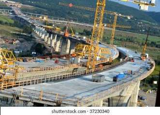
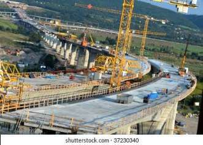

Overview
Syed Constructions undertakes various types of bridge projects including culverts, RCC slab bridges, steel girder bridges, and pedestrian crossings. We work closely with government departments and engineering consultants to deliver structurally sound, weather-resistant, and long-lasting bridge infrastructure.
Bridge Construction Process
1. Survey and Design Coordination
We conduct hydrological studies, site feasibility checks, and alignment planning. Our structural engineers coordinate with design consultants to finalize drawings and BOQs as per IRC/IS codes.
2. Foundation and Substructure
We begin with excavation and laying of foundations — open or pile type depending on soil condition. We cast abutments and piers using RCC with waterproofing additives and shuttering for shape precision.
3. Superstructure: Deck and Slabs
Deck slabs are cast using high-grade concrete (M30+), with reinforcement per design. Expansion joints and bearing pads are placed to manage load distribution and temperature expansion.
4. Steel Girder Installation (if applicable)
Pre-fabricated steel girders are placed using cranes or launching methods. Connections are bolted/welded securely and load-tested before slab casting.
5. Approach Roads and Drainage
We construct properly graded approach roads on either side with guard walls, side drains, and retaining structures to ensure water flow and vehicle transition.
6. Finishing and Safety Works
Includes railing, painting, road markings, signage, and crash barriers. Drain spouts and scuppers are installed for deck drainage. Final QC inspection is conducted with department engineers.
Machinery & Skilled Team
Our bridge projects utilize cranes, batching plants, formwork systems, vibrators, scaffolding, and tower lights. Our crew includes bridge engineers, safety managers, welders, and shuttering carpenters.
Executed Projects
- RCC Minor Bridge – Over Canal – Hindupur (2022)
- Steel Girder Culvert – NH Road Extension – Kadiri (2021)
- Box Culvert – Irrigation Channel – Tadipatri Rural Area (2020)
Gallery
 
